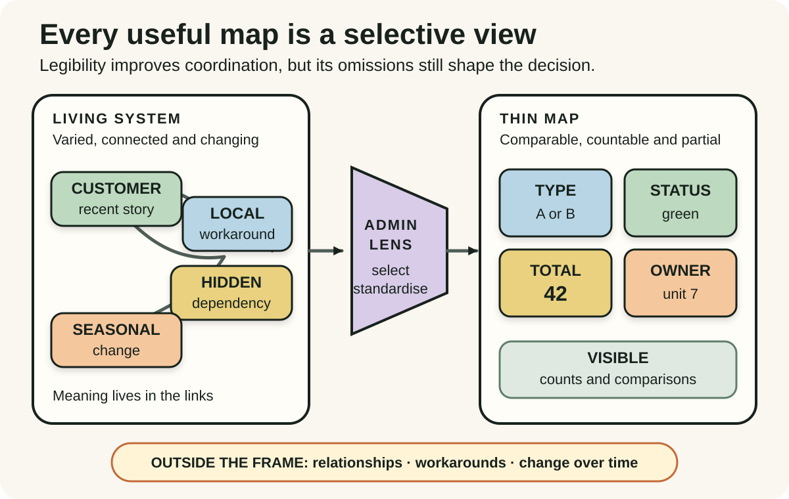
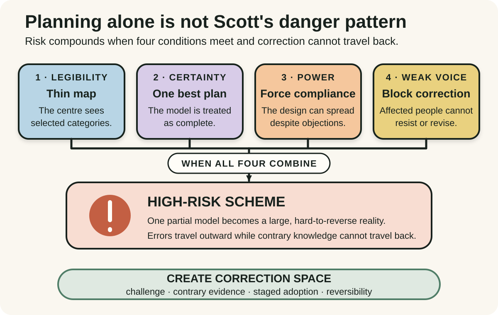
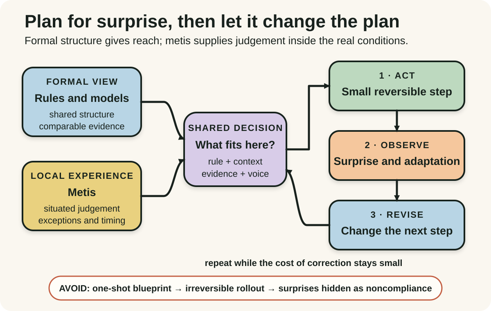

Daily lesson ·
Seeing Like a State
Treat every plan as a partial view: make simplifications visible, avoid combining certainty with unanswerable power and keep local practical knowledge inside a reversible learning loop.
Idea 1
A map is useful because it leaves things out #
The idea
Scott argues that states make complex societies and landscapes administratively legible through devices such as standard measures, fixed surnames, cadastral maps and simplified forestry. These representations help officials count, compare, tax and coordinate what would otherwise remain locally varied and difficult to see from the centre.
Legibility is a thin simplification, not a complete picture. A map made for one purpose excludes relationships, informal work, seasonal variation and local uses that may be essential to how the real system survives. Trouble begins when the simplified representation is treated as the system itself and then redesigned for the map's convenience.

Why it matters
Product metrics, data models and organisational categories always compress reality. Making the loss explicit helps a team use the model for its intended decision without forcing customers, operators or edge cases to behave as if the categories were complete.
Apply it today
Choose one dashboard, status, score or form field that influences a current decision. Write the exact question it helps answer.
Ask what cannot fit that representation, who notices the missing detail first and how one exception can reach the decision-maker before the metric becomes a target.
Caveat or failure mode
Simplification is unavoidable and often beneficial. Shared measures can support coordination, rights, safety and accountability. The lesson is not to preserve every local variation, but to match the map to its purpose, expose important omissions and revise it when consequences show that the categories are wrong.
Idea 2
Failure needs a dangerous combination #
The idea
Scott does not reduce every planning failure to expertise or scale. His catastrophic cases combine four conditions: an administrative simplification of society or nature, a high-modernist confidence that a rational design can reorder it, enough coercive power to impose the scheme and a civil society too weak to resist or correct it.
The interaction matters. A simplified map can be useful, an ambitious plan can be revised and expertise can improve lives. Risk becomes extreme when one abstract model is treated as complete, imposed at scale and protected from the people who bear its errors.

Why it matters
Large change programs often debate whether the target design is right while ignoring how errors will travel. Looking at voice, power and reversibility reveals whether a mistaken assumption will be corrected locally or multiplied across the organisation.
Apply it today
Take one standardisation or transformation proposal and list the model, the confidence claim, the mechanism that compels adoption and the channels available to challenge it.
Add one explicit stop signal, one affected-person review and one reversible boundary before expanding the scheme.
Caveat or failure mode
The four conditions are Scott's interpretive synthesis across selected cases, not a validated scoring model or a claim that every failure needs exactly the same ingredients. Democratic authority, common standards and decisive action can be necessary. Judge the actual stakes, rights, evidence and correction mechanisms in context.
Idea 3
Keep practical knowledge in the loop #
The idea
Scott uses the Greek term metis for practical intelligence acquired through close experience in a changing environment. It includes knowing which rule applies now, which signal matters, how conditions interact and when an unusual case requires improvisation. Such knowledge is often distributed, tacit and difficult to capture in a central blueprint.
His alternative is not rule-free localism. Scott recommends modest steps, reversibility, planning for surprise and institutions that can learn from informal adaptation. Formal knowledge provides reach and common structure; practical knowledge tests whether that structure still fits the situation.

Why it matters
Operational work produces facts that architecture diagrams, procedures and executive reports cannot predict. A feedback loop preserves the leverage of formal standards while letting real incidents, edge cases and workarounds improve the next decision.
Apply it today
Choose one rule or rollout assumption and ask an operator for a recent case where the documented path did not fit the situation.
Define one bounded, reversible change and one observation that would make you revise, pause or abandon it before broader adoption.
Caveat or failure mode
Local practice is not automatically wise or fair. It can preserve unsafe habits, hidden exclusion and knowledge that does not transfer. Combine practical knowledge with evidence, rights, professional expertise and explicit outcomes; preserve voice without romanticising every workaround.
Knowledge check · 6 questions
Learning check
Answer all 6, then check your answers. Your first result stays in this browser, and each explanation appears after you check. A 3-question review can appear on the homepage from tomorrow.
6 questions not yet answered.
Today's experiment · 10 minutes
Audit one thin map before it becomes the plan
- Choose one dashboard, workflow, score or category that will shape a current decision.
- Write the purpose it serves and three features of reality it makes visible.
- Ask what important relationship, exception or local practice it cannot represent and who encounters that omission first.
- Name one channel through which that person can challenge the model and one signal that would pause the decision.
- Reduce the next action to a reversible step and record what surprise would change the following step.
Observable result: You finish with a useful map whose purpose, blind spot, correction channel and reversible next step are explicit rather than assumed away.
Retrieval practice
Spaced recall
- From Domain-Driven Design Distilled: which shared label in a current system may hide different meanings on either side of a bounded context?
- From Continuous Discovery Habits: which recent customer story could reveal an opportunity that the product dashboard cannot represent?
Verification
Source notes
These links support the attributed claims and edition details; applications and extensions are labelled in the lesson.
- Yale University Press: Seeing Like a State original paperback, scope and four conditions
- Yale University Press: 2020 Veritas edition record
- WorldCat: 1998 Yale University Press publication record
- Oxford Handbook of Classics in Contemporary Political Theory: Scott's thesis and selective evidence
- University of Chicago: Cass Sunstein review, mechanisms and counterexamples
- Comparative Studies in Society and History: scholarly review of simplification and metis
One-sentence takeaway